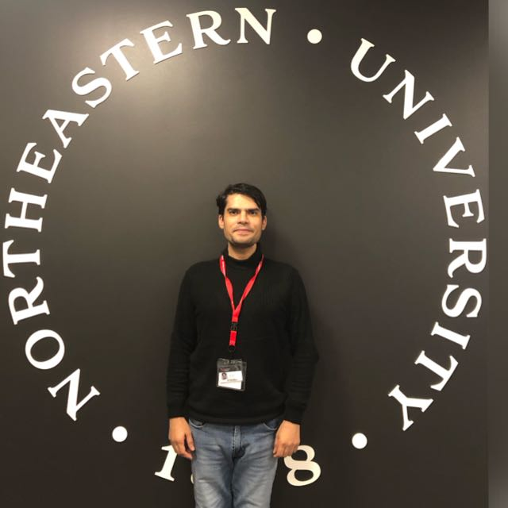

I am a physician (MBBS) turned AI researcher working at the intersection of clinical medicine, machine learning, and generative AI — from radiology-report NLP to medical-imaging model audits.

I am currently an AI Research Scientist at the Language Technologies Research Centre (LTRC), IIIT Hyderabad, where I lead an NLP pipeline that extracts 54 standardised fields from free-text rectal-cancer MRI radiology reports.
Before AI, I practised as a physician for over a decade across inpatient, outpatient, and family-medicine settings. That clinical grounding is the through-line of my research: I care about whether medical AI is not just accurate, but faithful, validated, and safe to put in front of a clinician.
I hold a Master's in Professional Studies in Data Analytics & Applied Machine Intelligence from Northeastern University (GPA 4.0/4.0), building on an MBBS from Rajiv Gandhi University of Health Sciences, Mysore Medical College.
Research-grade engineering across the medical-AI stack, from data to deployment.
Clinical NLP, structured extraction from radiology reports, medical imaging, AI-driven clinical decision support.
Transformer fine-tuning, low-rank adaptation, retrieval, and ensemble methods with domain-constrained post-processing.
LLM pretraining and fine-tuning, instruction tuning, prompt engineering, and mechanistic analysis of VLMs.
Python-first, with the PyTorch / TensorFlow ecosystem and high-performance and cloud GPU training.
A selection of open-source projects. More on my GitHub.
Cross-model audit of whether chest-X-ray vision-language-model attention overlays match radiologist boxes, with a radiologist reader study. Accepted at MICCAI iMIMIC 2026.
View repository → Medical ImagingUNet-based liver and tumour segmentation from 3D CT volumes, validated via visual and loss analysis.
View repository → Medical ImagingU-Net segmentation on cardiac MRI reaching a Dice similarity coefficient of 0.95.
View repository → Generative AIA transformer LLM built from scratch, pretrained and instruction-tuned with LoRA, cosine-decay scheduling, and gradient clipping.
View repository → Clinical NLPBERT fine-tuned on 50k sentences for mental-health classification; deployed on Hugging Face Spaces.
View repository → RAG · HealthA RAG + FAISS assistant that generates personalised Type-2 diabetes meal plans from medical literature.
View repository →Peer-reviewed work in medical AI and clinical research.
Open to research collaborations and PhD opportunities in medical AI, computational pathology, and clinical NLP.